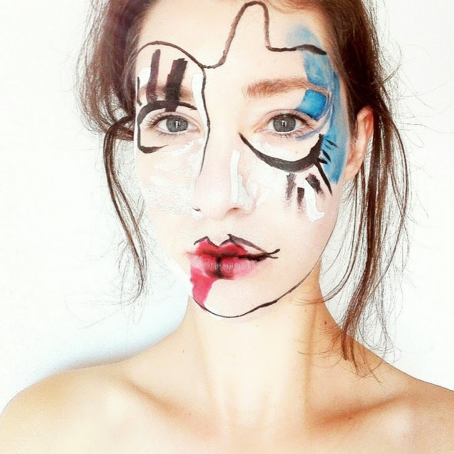

Tražilica ne vidi tvoju stranicu, nego je čita. Sve što je slika, video ili lijep raspored za nju je prazno mjesto dok mu ne pridružiš tekst. Tri komada teksta nose najviše posla: meta naslov (naslov koji se vidi u rezultatima pretrage), meta opis (dva reda ispod njega) i alt tekstovi na slikama. U nastavku je što svaki od njih znači, koliko smije biti dug i kako u petnaest minuta provjeriš imaš li ih uopće.
Zašto se sve svodi na tekst
Kad Googleov bot dođe na tvoju stranicu, on preuzme njezin izvorni kod i iz njega izvuče tekst. Fotografija ručno rađene zdjele njemu je samo datoteka s nazivom. Video je poveznica. Prekrasan raspored u kojem se sve savršeno slaže njemu ne znači ništa dok mu netko riječima ne kaže o čemu je tu riječ.
Zato svaka stranica ima dvije razine teksta. Jedna je ono što posjetitelj čita, tvoji naslovi i odlomci. Druga je tekst koji posjetitelj nikad ne vidi, a tražilica ga čita prvog: meta naslov, meta opis i alt atributi na slikama. Ta druga razina je ono što se najčešće zaboravi kad stranicu radiš sama ili je naručiš pa nitko izrijekom ne spomene da to treba popuniti.
Isto vrijedi i za AI alate. ChatGPT, Perplexity i Google AI Overviews dohvaćaju stranice i njihove slike na isti način, oslanjajući se na isti tekst. Ako slika nema opis, ne mogu je ni ponuditi kao odgovor.
Meta naslov: jedina rečenica koju svi vide prije nego kliknu
Meta naslov je onaj plavi, podebljani red u rezultatima pretrage. On se često razlikuje od velikog naslova na samoj stranici i to je u redu, čak i poželjno. Naslov na stranici piše se za čovjeka koji je već došao. Meta naslov piše se za čovjeka koji te tek bira između deset ponuđenih rezultata.
Preporučena duljina je između 51 i 60 znakova. Google zapravo mjeri širinu u pikselima, oko 600, pa dugačke riječi zauzmu više prostora od kratkih. Naslovi u tom rasponu najrjeđe budu odrezani ili prepisani.
- Najvažnija riječ ide na početak. „Ručno rađena keramika Split” radi bolje od „Dobro došli na stranicu naše male obiteljske radionice”.
- Svaka stranica dobiva svoj naslov. Isti meta naslov na deset stranica znači da tražilica ne zna po čemu se te stranice razlikuju.
- Naziv obrta ide na kraj, iza uspravne crte. Ljudi koji te već znaju naći će te po imenu ionako. Ljudi koji te ne znaju traže ono što prodaješ.
- Bez nabijanja ključnih riječi. „Keramika Split, keramika Dalmacija, keramika kupnja, keramika jeftino” izgleda kao spam i tražilici i čovjeku.
Meta opis: ne rangira te, ali odlučuje o kliku
Meta opis su ona dva reda sivog teksta ispod naslova. Google je više puta potvrdio da meta opis nije faktor rangiranja. To mnoge navede na zaključak da ga ne treba pisati, a zaključak je pogrešan: opis je tvoj jedini prostor da nekome objasniš zašto da klikne baš na tebe, a ne na konkurenciju iznad ili ispod.
Ono što treba znati unaprijed jest da ga Google vrlo često prepiše. Portentova analiza 30.000 ključnih riječi pokazala je prepisivanje u 71% rezultata na mobitelu i 68% na desktopu, a Ahrefsova studija došla je do otprilike 63%. Razlog je jednostavan: kad netko postavi vrlo specifično pitanje, Google radije uzme rečenicu s tvoje stranice koja izravno odgovara na to pitanje nego tvoj općeniti opis.
Meta opis ne pišeš zato da ga Google zadrži, nego zato da imaš kontrolu nad onim što se vidi kad ga zadrži.
Praktično to znači dvije stvari. Prvo, drži opis oko 155 znakova i napiši ga kao rečenicu koja obećava konkretnu korist. Drugo, pobrini se da i sam tekst stranice ima jasne, kratke rečenice koje odgovaraju na pitanja, jer upravo njih Google izvlači kad odluči prepisati opis.
Alt tekstovi: kako tražilica zna što je na fotografiji
Alt tekst je kratak opis slike upisan u kod stranice. Nastao je zbog pristupačnosti, da čitač ekrana slijepoj osobi može opisati što je na fotografiji, i to mu je i dalje najvažnija uloga. Usput je postao i način na koji tražilice i AI alati doznaju sadržaj slike.
Moderne tražilice prepoznaju predmete na fotografiji, ali ne znaju zašto je ta fotografija na toj stranici. Računalni vid vidi zdjelu. Alt tekst kaže da je to zdjela od gline s plavom glazurom, rađena na lončarskom kolu, i time slici daje značenje unutar tvoje priče.
- Opiši ono što se vidi, u jednoj rečenici. „Zdjela od gline s plavom glazurom na lončarskom kolu” umjesto „slika1” ili „keramika keramika Split”.
- Budi konkretna. AI alati lakše povežu sliku s razgovornim pitanjem kad je opis specifičan. Generičan opis rijetko negdje ispliva.
- Čisto ukrasne slike dobivaju prazan alt. Ako slika ne nosi informaciju, upiši
alt=""da je čitač ekrana preskoči. - Naziv datoteke isto se čita.
zdjela-plava-glazura.jpggovori više odIMG_4471.jpg. Bez dijakritike, riječi odvojene crticom.
Četiri mjesta koja se gotovo uvijek zaborave
Naslov, opis i alt tekstovi su tri velika. Uz njih ide još nekoliko manjih koja se rijetko spomenu kad se stranica predaje, a lako se popune.
- Opisi kategorija u webshopu. Stranica kategorije obično sadrži samo rešetku proizvoda. Dva do tri odlomka na vrhu ili dnu kategorije često su jedini tekst po kojem tražilica uopće zna o čemu je ta kategorija.
- Podnaslovi u tekstu. H2 i H3 podnaslovi tražilici pokazuju strukturu stranice. Nabacani podebljani redovi umjesto pravih podnaslova izgledaju isto čovjeku, ali ne i botu.
- Tekst na gumbima i poveznicama. „Saznaj više” ne govori ništa. „Pogledaj cjenik radionica” govori i tražilici i čovjeku kamo vodi.
- Tekst koji postoji samo unutar slike. Cjenik, radno vrijeme ili program radionice objavljeni kao slika za tražilicu ne postoje. Ista informacija mora biti i kao tekst na stranici.
Sve navedeno prirodno se nastavlja na schema markup, koji istoj toj tražilici dodatno označava što je cijena, što recenzija, a što pitanje i odgovor.
Kako provjeriti svoju stranicu za petnaest minuta
Ne treba ti alat ni pristup kodu za prvu provjeru. Dovoljan je preglednik.
- Upiši
site:tvojadomena.hru Google. Dobit ćeš popis svojih stranica onako kako ih Google vidi, s naslovima i opisima. Sve što je odrezano, prazno ili se ponavlja na više stranica odmah se vidi. - Otvori svaku važnu stranicu i pitaj se bi li netko tko te ne poznaje iz tog naslova znao što ovdje nudiš.
- Na stranici pritisni desni klik pa „Prikaži izvor stranice” i potraži
<title>i<meta name="description". Ako ih nema ili su prazni, to je prvi zadatak. - Za slike, u istom izvoru potraži
alt=. Prazni ili nepostojeći alt atributi na fotografijama proizvoda su najbrža stvar koju možeš popraviti danas.
Kad prođeš taj krug, imaš popis konkretnih zadataka umjesto općenitog osjećaja da bi „trebalo nešto po SEO-u”. Ako ti fali šira slika prije nego kreneš, počni od osnova SEO-a, a ako te zanima kako isti tekst radi za AI alate, tu je GEO.
U sljedećim člancima svaka od ovih stavki dobiva svoj vodič s primjerima, počevši od meta naslova.
Najčešća pitanja
Koliko dug smije biti meta naslov?
Između 51 i 60 znakova. Google zapravo mjeri širinu u pikselima, oko 600 piksela, pa dugačke riječi zauzmu više prostora od kratkih. Naslovi u tom rasponu najrjeđe budu prepisani ili odrezani.
Utječe li meta opis na rangiranje?
Ne izravno. Google je više puta potvrdio da meta opis nije faktor rangiranja. Ali odlučuje hoće li netko kliknuti na tvoj rezultat umjesto na tuđi, pa neizravno utječe na promet.
Zašto Google prikazuje drugi opis od onog koji sam napisala?
Zato što Google prepisuje meta opise u velikoj većini slučajeva. Portentova analiza 30.000 ključnih riječi pokazala je prepisivanje u 71% rezultata na mobitelu i 68% na desktopu. Google umjesto tvog opisa uzme dio teksta sa stranice koji bolje odgovara na konkretan upit.
Trebaju li alt tekstovi i slikama koje su samo ukras?
Ne. Čisto dekorativne slike dobivaju prazan alt atribut (alt=""), da ih čitač ekrana preskoči. Alt tekst pišeš samo za slike koje nose informaciju.

Dora Šušković Stipanović radi kao specijalistica digitalnog marketinga u jednom od najvećih webshopova u Hrvatskoj, uz freelance projekte u marketingu i web dizajnu. Vodila je Canva AI edukacije za međunarodnu tvrtku i javnu instituciju, a kroz Kužiš dijeli praktične digitalne alate i AI savjete za male biznise i obrte.